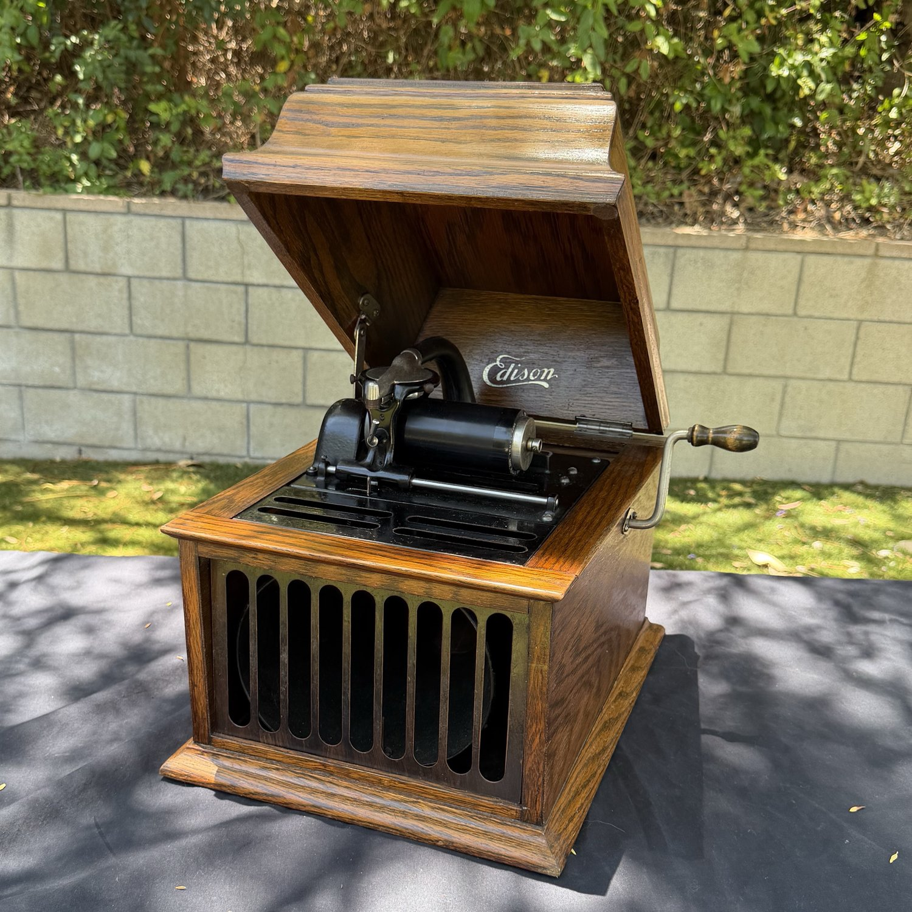
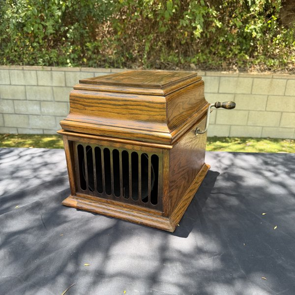
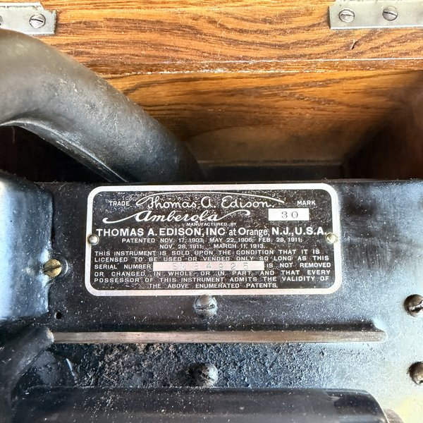
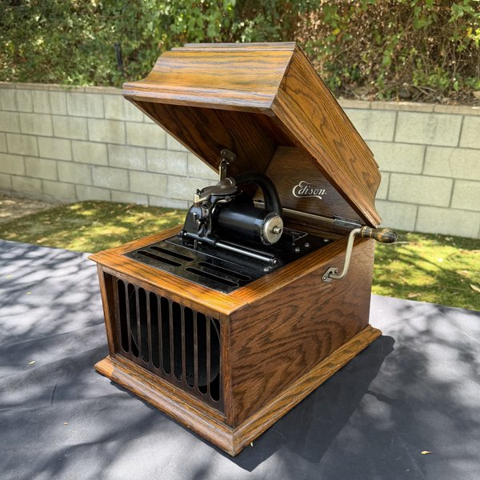

1
Edison Amberola 30
Internal-horn cylinder phonograph that plays 4-minute Blue Amberol records

MakerThomas A. Edison, Inc. — Orange, New Jersey
ModelAmberola 30 (smallest of the 30 / 50 / 75 series)
SerialSM 84925 (read from the plate photo — confirm on the machine)
TypeInternal-horn cylinder phonograph; 4-minute Blue Amberol
Approx. date1915–1929 (introduced 1915)
CaseOak, tabletop, with domed lid
ReproducerDiamond C (long-neck) — confirm from machine
ConditionAppears complete; runs (shown on video)
The Amberola 30 was the smallest and least expensive of Edison’s post-1915 “price-named” internal-horn cylinder machines (the 30 / 50 / 75 series). It is a straight 4-minute machine that plays Blue Amberol celluloid cylinders — the most durable and most commonly found cylinder type, made through the end of Edison phonograph production in 1929.
Because the horn is internal, there is no external horn to be “missing” — a complete, running Amberola 30 is a usable, compact tabletop machine. This example appears complete with its reproducer, and a short video shows it running.
Watch it run
The Amberola 30 running
Highlights
- Plays Blue Amberol cylinders — the most available cylinder type, so a buyer can actually use it.
- Compact oak tabletop machine; internal horn means nothing external to lose or damage.
- Appears complete with reproducer; a running video is available.
- Including a group of cylinders makes it a ready-to-play package.
Photos — Edison Amberola 30 (click any photo to enlarge & browse)


